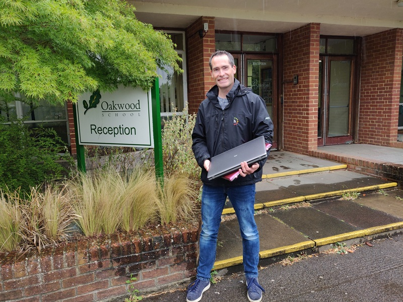
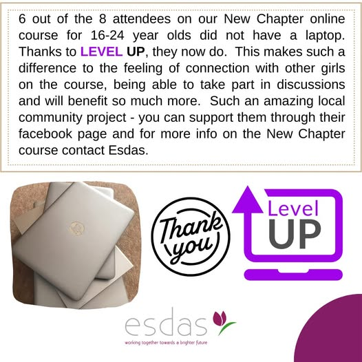

Eliminating Digital Poverty
Empowering Young People Through Technology
Empowering Young People Through Technology
Level Up Laptop Appeal was founded in May 2020 as response to the COVID-19 pandemic. Young people were sent home and were expected to study online. It became apparent very quickly that many students didn't have suitable IT equipment to study on, completing homework on a mobile phone, if at all.
Level Up's founder, Martin Saunders, worked in the IT industry and felt he could do something about this. Within the first three months Martin collected, securely wiped, refurbished and delivered over 100 laptops to local schools in Horley, Surrey.
Level Up's founder, Martin Saunders, worked in the IT industry and felt he could do something about this. Within the first three months Martin collected, securely wiped, refurbished and delivered over 100 laptops to local schools in Horley, Surrey.


Since that point, Level Up Laptop Appeal has donated over 2200 laptops. Thankfully the COVID-19 pandemic is largely behind us, but the change in learning practices at schools who've embraced online resources means the digital divide is still bad, and getting worse.
In addition to helping students through schools, Level Up has also embraced other disadvantaged members of our community, including women and children fleeing domestic abuse, refugees and asylum seekers and young carers.
In addition to helping students through schools, Level Up has also embraced other disadvantaged members of our community, including women and children fleeing domestic abuse, refugees and asylum seekers and young carers.
© 2025 Level Up Laptop Appeal
Level Up Laptop appeal is a charitable project founded run by Martin Saunders in Horley, RH6 9JA.
Level Up Laptop appeal is a charitable project founded run by Martin Saunders in Horley, RH6 9JA.